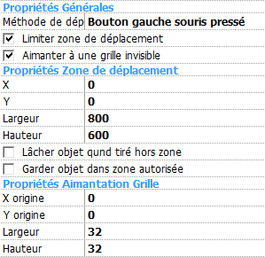

Ce mouvement vous permet de tirer vos objets à la souris. Le déplacement d'un objet ayant ce mouvement peut être limité à une zone donnée et aligné sur une grille. Vous pouvez sélectionner diverses options comme la méthode de déplacement de l'objet. Les utilisateurs avancés peuvent changer les options et contrôler le mouvement via l'éditeur d'événements.
Par défaut, l'objet est tiré classiquement en gardant le bouton gauche de la souris appuyé.
Si vous désirez changer le bouton et la méthode utilisée pour tirer l'objet, ou restreindre le déplacement, sélectionnez les propriétés adéquates décrites ci-dessous. L'objet est toujours tiré grâce à un clic souris. Si l'objet a l'option "collisions fines", alors l'utilisateur doit cliquer sur une partie non transparente de l'objet.
Note: si l'utilisateur a choisi d'inverser les boutons de la souris (par exemple s'il est gaucher) alors le bouton utilisé pour tirer l'objet est aussi inversé.
L'animation Marcher est jouée pendant que l'objet est tiré, l'animation Stop est jouée quand il est stationnaire.

Figure 1: Propriétés du mouvement Tirer et Lâcher.
Propriétés Générales
Méthode: indique comment l'utilisateur tire l'objet :
Limiter zone de déplacement: limite la zone dans laquelle l'objet peut être tiré. Les paramètres de la zone peuvent être modifiés dans la section Propriétés Zone de Déplacement.
Aimanter à une grille invisible: l'objet se déplace sur une grille pendant qu'il est tiré. Voir la section Propriétés Aimantation Grille.
Propriétés Zone de Déplacement
L'objet ne peut pas être déplacé hors de la zone définie dans cette section.
X: position X du côté gauche de la zone.
Y: position Y du côté haut de la zone.
W: largeur de la zone.
H: hauteur de la zone.
Lâcher l'objet quand tiré hors zone: si cette option est cochée, l'objet est automatique lâché quand l'utilisateur essaye de tirer l'objet en dehors de la zone autorisée. Si cette option n'est pas cochée, l'objet sera lâché quand l'utilisateur le lâchera (ou quand le mouvement sera stoppé par une action).
Garder objet dans zone autorisée: par défaut la zone limitée n'affecte l'objet que lorsqu'il est tiré. Si vous cochez cette propriété, l'objet ne pourra pas sortir de cette zone même avec une action Fixer Position.
Propriétés Aimantation Grille
X origine: position X de l'origine de la grille.
Y origine: position Y de l'origine de la grille.
Largeur: largeur d'une case de la grille.
Hauteur: hauteur d'une case de la grille.